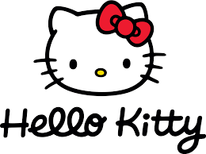

Hello Kitty
Criação
A Hello Kitty foi criada originalmente pela designer da Sanrio, Yuko Shimizu, em 1974. Shimizu deixou a companhia aproximadamente um ano depois. A segunda designer, Setsuko Yonekubo, assumiu por cinco anos até 1980, quando essa tarefa foi dada a Yuko Yamaguchi, que ainda está à frente do trabalho.
A primeira aparição da personagem em um item foi uma bolsa de moedas de vinil no Japão, onde ela foi retratada sentada entre uma garrafa de leite e um aquário.A Sanrio decidiu fazer Hello Kitty britânica porque, na época de sua criação, os países estrangeiros, em particular a Grã-Bretanha, eram modernos no Japão.A Sanrio já tinha vários personagens ambientados nos EUA e queria que a Hello Kitty fosse diferente.
História
Hello Kitty vendeu bem imediatamente após o lançamento de 1974, e as vendas da Sanrio aumentaram sete vezes até cair temporariamente em 1978. Novas séries com Hello Kitty em designs temáticos diferentes são lançadas regularmente, seguindo as tendências atuais. Yuko Yamaguchi, a principal designer da maior parte da história da Hello Kitty, disse que moda, filmes e TV a inspiram na criação de novos designs.
Hello Kitty foi originalmente comercializado apenas para um público infantil e pré-adolescente. Na década de 1990, o mercado-alvo da Hello Kitty foi ampliado para incluir adolescentes e adultos como uma marca retrô. Comercializado para aqueles que não podiam obter mercadorias da Hello Kitty quando crianças, ou que lembram com carinho dos itens que possuíam, a Sanrio começou a vender produtos da marca Hello Kitty, como bolsas e laptops. A série Face 1994-1996 foi a primeira a ser projetada para um apelo mais maduro.
De acordo com a Sanrio, em 1999, a Hello Kitty apareceu em 12.000 produtos diferentes anualmente. Em 2008, a Hello Kitty era responsável por metade da receita líquida de $ 1 bilhão da Sanrio, e havia mais de 50.000 produtos diferentes da marca Hello Kitty em mais de 60 países. Começando em 2007, seguindo as tendências no Japão, a Sanrio começou a usar designs mais escuros para a Hello Kitty com mais preto e menos rosa, se afastando dos estilos kawaii.